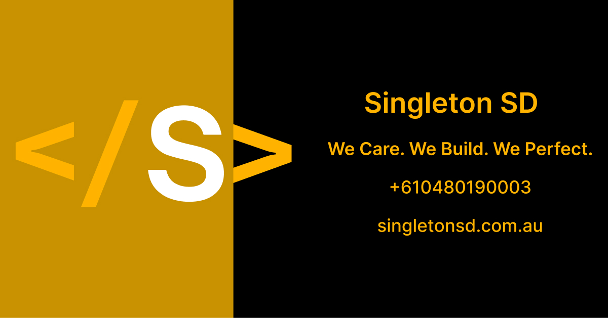
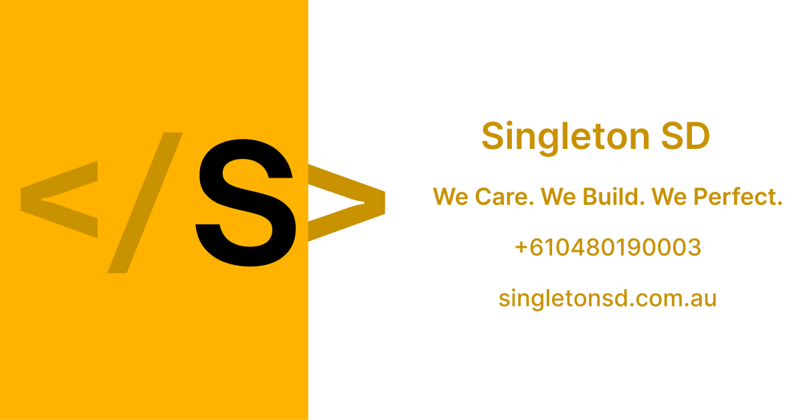

Singleton SD Assets
Binary brand assets for Singleton SD — icon mark, wordmarks, favicons, PWA manifests, and Open Graph images.
Served from
assets.singletonsd.com
(GitLab Pages). Token values live in @singleton-sd/tokens; Penpot is the
style-guide home. Brand rules: BRAND.md. Agent working
agreements: AGENTS.md. Token contract:
FOUNDATIONS.md
· DESIGN.md.
Brand guide (no Penpot): assets.singletonsd.com/brand/ — open in a browser, or Print → Save as PDF.
At a glance
| Asset | Preview | Default download |
|---|---|---|
| Dark mark (512) | 512.png | |
| Light mark (512) | 512.png | |
| Favicon | favicon-32x32.png · site.webmanifest | |
| OG dark |  |
og-default.jpg |
| OG light |  |
og-default.jpg |
| Compact wordmark (dark) | 1280.png |
{kind=link}
{kind=link}
{kind=link}
{kind=link}
{kind=link}
{kind=link}
Use these when you do not need a specific shape, background, or border variant.
CDN URL convention
Pages serves the dist/ tree at the site root — omit /dist from public URLs.
https://assets.singletonsd.com/logo/static/{dark|light}/{circle|square}/{bg-…}/{size}.png
https://assets.singletonsd.com/logo/wordmark/{legal|descriptor|compact}/{light|dark}/{bg-…}/{width}.png
https://assets.singletonsd.com/logo/wordmark/{legal|descriptor|compact}/{light|dark}/{light|dark}.svg
https://assets.singletonsd.com/favicons/{circle|square}/{bg-…}/…
https://assets.singletonsd.com/og-image/{dark|light}/og-default.jpg
Examples:
https://assets.singletonsd.com/logo/static/dark/circle/bg-none/512.pnghttps://assets.singletonsd.com/logo/wordmark/descriptor/light/bg-none/1280.pnghttps://assets.singletonsd.com/favicons/circle/bg-none/site.webmanifest
Browse a folder on the CDN for the full size matrix. CI builds cap static mark
PNGs at <= 512px and wordmarks at <= 2560px; uncapped local builds can emit
1024 / 4096 (mark) and 4096 (wordmark).
Catalog
Icon mark
Circular S mark. Prefer circle / bg-none for product UI.
| Variant | Preview |
|---|---|
| dark / circle / bg-none | |
| dark / circle / bg-black | |
| dark / circle / bd-white | |
| light / circle / bg-none | |
| light / circle / bg-white | |
| light / circle / bd-black |
{kind=link}
{kind=link}
{kind=link}
Square cuts use the same path with square instead of circle. Common sizes:
320, 512 (and 1024 / 4096 in uncapped builds).
Variant rules:
- Dark mark: no white fill, no black border
- Light mark: no black fill, no white border
Wordmarks
Horizontal lockups by role. PNG sizes: 640, 1280, 2560 (+ 4096 uncapped).
SVG masters are copied next to each theme folder.
| Role | Wording | Typical use |
|---|---|---|
legal |
</ SINGLETON > + Software Pty Ltd |
Letters, contracts |
descriptor |
</ SINGLETON > + Software Development |
Web, marketing |
compact |
</ SINGLETON SD > |
Nav, signatures |
| Role / theme | Preview (bg-none / 1280) |
SVG |
|---|---|---|
| legal / dark | dark.svg | |
| legal / light | light.svg | |
| descriptor / dark | dark.svg | |
| descriptor / light | light.svg | |
| compact / dark | dark.svg | |
| compact / light | light.svg |
{kind=link}
{kind=link}
{kind=link}
{kind=link}
{kind=link}
{kind=link}
{kind=link}
{kind=link}
{kind=link}
{kind=link}
{kind=link}
Backgrounds:
- Light masters →
bg-gray-light,bg-white,bg-none - Dark masters →
bg-gray,bg-black,bg-none
Favicons and manifests
Generated from the dark mark. Default set: circle / bg-none.
Circle
| Variant | Preview |
|---|---|
| bg-none | |
| bg-none / bd-white |  |
| bg-black |
{kind=link}
{kind=link}
Square
| Variant | Preview |
|---|---|
| bg-none |  |
| bg-none / bd-white | |
| bg-black |
{kind=link}
{kind=link}
Manifests
| Path | Description |
|---|---|
| circle / bg-none | Transparent circle |
| circle / bg-none / bd-white | Transparent circle + white border |
| circle / bg-black | Circle on black |
| square / bg-none | Transparent square |
| square / bg-none / bd-white | Transparent square + white border |
| square / bg-black | Square on black |
Each favicon folder also includes favicon-16x16.png, favicon-32x32.png,
apple-touch-icon.png, android-chrome-192x192.png, android-chrome-512x512.png,
favicon.png, and favicon-4096x4096.png.
Manifest name / short_name: Singleton SD / SSD.
Open Graph
| Variant | Preview |
|---|---|
| dark / default | |
| light / default |
Optional retina files: dark @2, light @2.
{kind=link}
{kind=link}
Email and documents
Signature blocks and letterhead / footer marks live under src/email/ and
src/documents/. See BRAND.md for roles and trademark copy.
How to use
Favicons in HTML (CDN)
<link
rel="manifest"
href="https://assets.singletonsd.com/favicons/circle/bg-none/site.webmanifest"
/>
<link
rel="apple-touch-icon"
href="https://assets.singletonsd.com/favicons/circle/bg-none/apple-touch-icon.png"
/>
<link
rel="icon"
type="image/png"
sizes="32x32"
href="https://assets.singletonsd.com/favicons/circle/bg-none/favicon-32x32.png"
/>
<link
rel="icon"
type="image/png"
sizes="16x16"
href="https://assets.singletonsd.com/favicons/circle/bg-none/favicon-16x16.png"
/>
<link
rel="shortcut icon"
href="https://assets.singletonsd.com/favicons/circle/bg-none/favicon.png"
/>
Brand usage (short)
- Do not stretch; keep aspect ratio.
- Clear space ≈ mark height.
- Prefer SVG for web/print vectors; PNG for email and favicon/OG pipelines.
- Full rules: BRAND.md.
Build and contribute
Agent working agreements: AGENTS.md.
yarn install
yarn build
GitLab npm: .npmrc scopes @singleton-sd to GitLab’s package registry.
Public packages do not need a token.
| Script | Purpose |
|---|---|
yarn build |
Full publish build into dist/ |
yarn validate |
Validate required sources, product config, and SVG safety |
yarn build-manifest-icons |
Favicons + site.webmanifest |
yarn build-static-logo-assets |
Static icon-mark PNGs |
yarn build-wordmark-assets |
Wordmark lockup PNGs (+ SVG copy) |
yarn generate-html |
README → dist/index.html via @singleton-sd/scripts-readme-to-html |
yarn generate-brand-html |
Brand book → brand/index.html |
Size caps:
- CI (
CI=true): mark static<= 512, wordmark static<= 2560 - Overrides:
LOGO_STATIC_MAX_SIZE,WORDMARK_STATIC_MAX_SIZE
Contributor workflow: Logo Asset Workflow. Wordmark drop guide: src/logo/wordmark/README.md.
Layout
src/
├── logo/
│ ├── config/ # mark: shapes, backgrounds, borders, variants
│ ├── sources/ # dark|light .png / .svg
│ └── wordmark/ # legal / descriptor / compact
│ ├── config/
│ └── sources/{legal,descriptor,compact}/
├── og-image/{dark,light}/
├── illustrations/ # approved illustration masters
├── screenshots/ # approved current product screenshots
├── marketing/ # approved launch/social/campaign graphics
├── email/ # signature blocks
└── documents/ # letterhead / footer marks
meta.json # inventory pointers
dist/ # generated; served by GitLab during migration and GitHub after cutover
├── index.html
├── chrome.css # catalog chrome from readme-to-html
├── brand/index.html # public brand-guide snapshot
├── favicons/
├── logo/static/{dark|light}/
├── logo/wordmark/{legal|descriptor|compact}/
├── email/signature/
├── documents/{letterhead,footer}/
└── og-image/
Notes
- Package:
@singleton-sd/assets(GitLab Releases during migration; GitHub Releases receive generated archives; npm publish disabled). - Animations / expression pipelines are intentionally out of scope.
- Tagged GitHub builds publish immutable
/releases/X.Y.Z/Pages snapshots and attach the same generated assets to GitHub Releases. - Product repositories must follow the full mandatory scope in docs/product-assets-recipe.md.
© 2026 Singleton SD. All rights reserved.